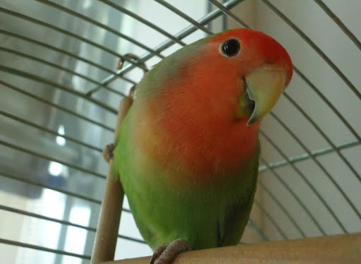

попугай нерозлучник
Попугаи-неразлучники действительно образуют моногамные пары, в которых не только заводят и выращивают птенцов, но и тесно общаются. И все же одиночное содержание птиц вполне допустимо, главным критерием комфортной жизни остаются хорошие условия, правильное питание, наличие игрушек и внимания владельца.8 сент. 2019 г. У меня есть нерозлучник. Жёлтая очень очень милая, когда она спит.
пение нерозлучников
место обетанея
подробно о поватках попугайчиков
Небольшие попугайчики, длина тела 10—17 см, крыла 4 см, а хвоста 6 см; вес 40—60 г. Голова относительно крупная. Окраска оперения в основном зелёная,
но надхвостье, грудь, голова, шея и горло могут иметь другую окраску — розовую, красную, синюю, жёлтую и других цветов. Клюв толстый, очень загнутый и
сильный. Своим клювом они могут нанести тяжёлые ранения даже человеку. Окраска клюва у одних видов ярко-красная, у других соломенно-жёлтая.
Хвост короткий и закруглённый, ноги тоже короткие, но попугайчики очень проворные, хорошо бегают по земле и отлично лазают по деревьям.